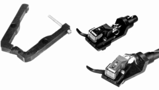

オルトフォン関連アクセサリー
OF-1
■価格 3,200円
■備考 SPUシリーズ用の
ストレート型アームパイプ・ダイレクト装着アダプター。

OF-2


■価格 4,300円
■備考 MC-30,20,10(MK�U含む）、SL-20用
グレードアップアダプター。
ボディの強度不足解消と、
ヘッドシェルとの密着性を改善。
真鍮製、重量6.2g。

（管理人所有機 MC10Superに装着した）
基本的にはMC-10、20用のアクセサリー。
ボディ形状からMC-30にも装着可能だが、オーディオクラフト自身もMC-30
は別格扱いしている。MC-20などの樹脂成形された発電部ケースとベース
の篏合の甘さの解消する為のものである。なお、適切に使えば、本体を破
損させるようなことは無い。管理人所有機は、装着して20年以上経つが異常は無い。
OF-3(a,b)

■価格 5,000円
■備考 OF-1と同様のSPUシリーズ用の
ストレート型アームパイプ・ダイレクト装着アダプター。
OF-3aがアルミ製で約3g、OF-3bが真鍮製で約10g。
オリジナルSPUの他、SPUマイスターシリーズまでは対応済み。
OF-3bは、同社のアームパイプAP-3やMC-Sに取り付けると、
オリジナルシェルでのトータルマスに近いよう設計されている。
オーディオクラフトのインデックスへ